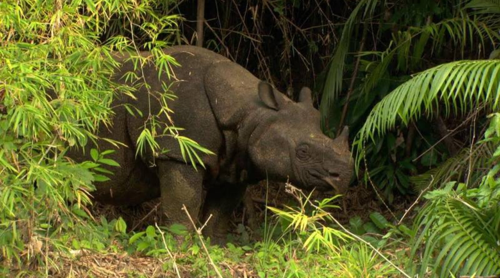
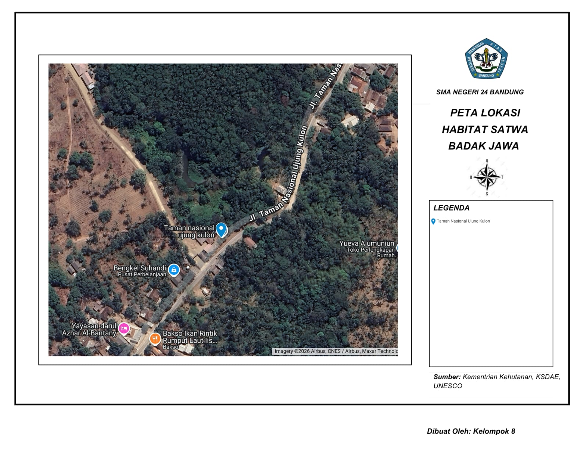
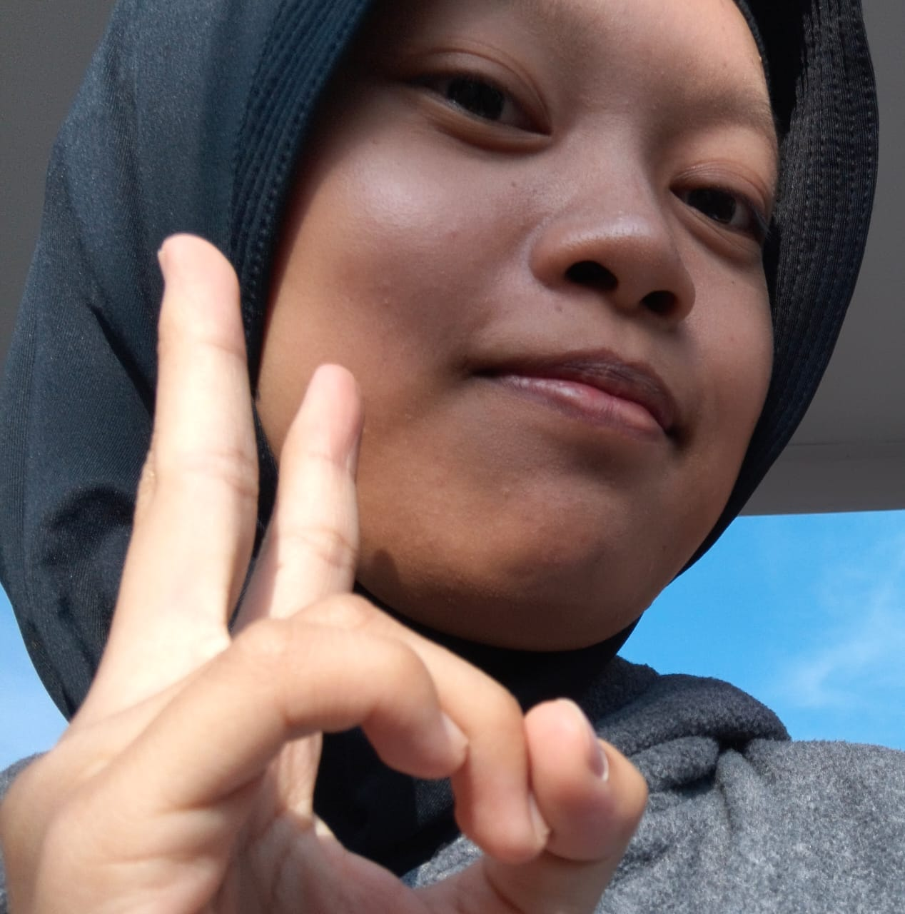
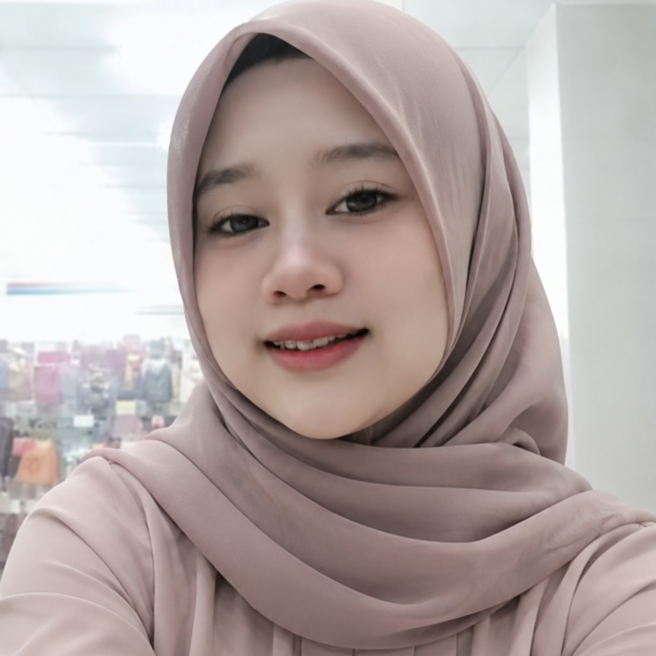
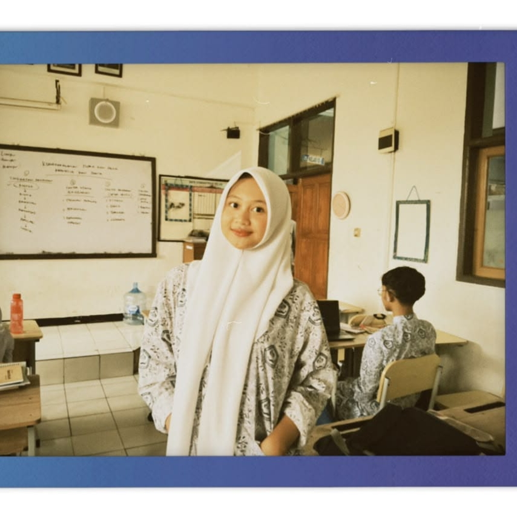
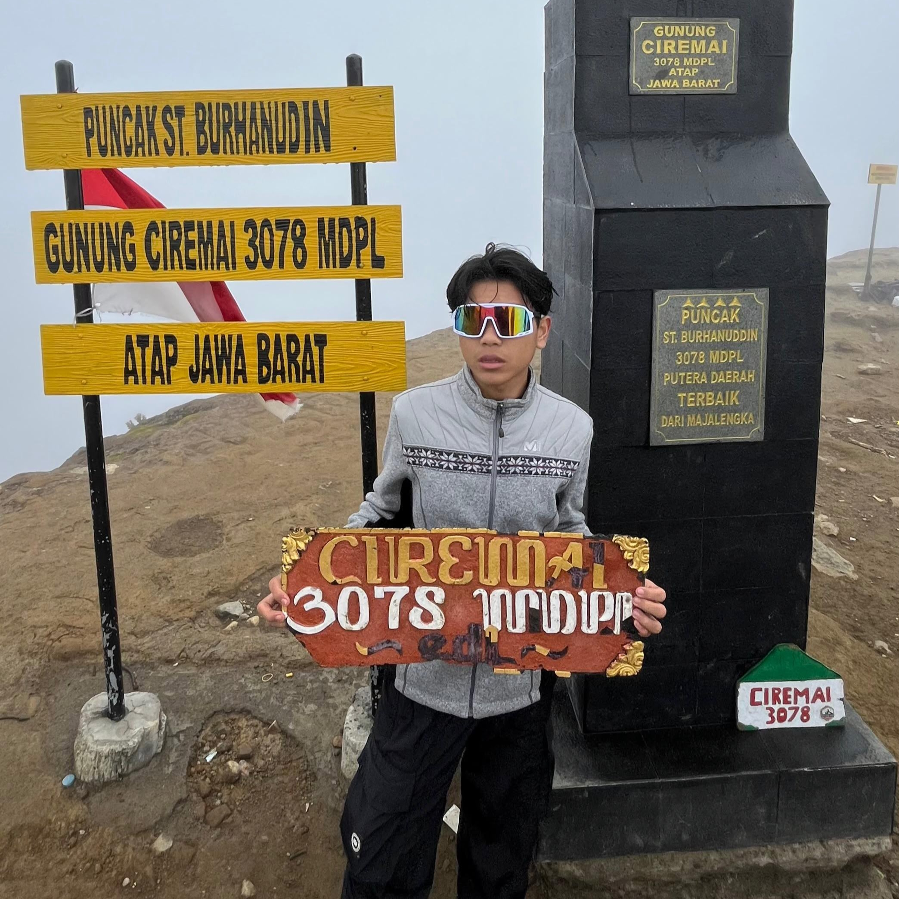
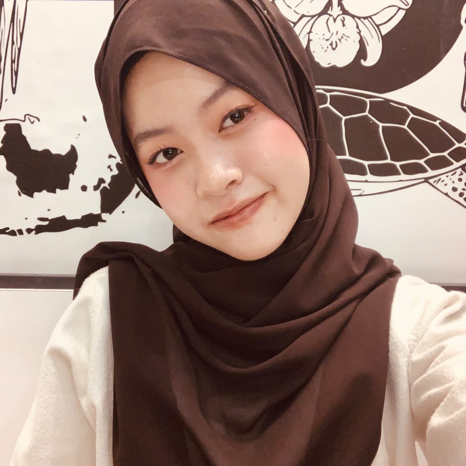

Badak Jawa
Penghuni terakhir hutan Ujung Kulon. Hanya ada di satu tempat di bumi.6
Mulai JelajahLihat Peta
Badak jawa di hutan Ujung Kulon13
Profil Badak Jawa
| Nama ilmiah | Rhinoceros sondaicus1 |
|---|---|
| Ciri fisik | Bercula satu, kulit tebal berlipat membentuk seperti perisai.2 Berat dewasa bisa mencapai sekitar 2.300 kg.2 |
| Makanan | Herbivora. Memakan daun, tunas, ranting, dan buah yang jatuh.2 |
| Perilaku | Hidup menyendiri, kecuali induk yang bersama anaknya.2 |
| Sebaran | Dulu juga ada di Vietnam, tetapi populasi di sana dinyatakan punah pada 2011.7 |
Habitat: Ujung Kulon
Semua badak jawa liar hidup di Taman Nasional Ujung Kulon di ujung barat Pulau Jawa.6 Kawasan ini ditetapkan sebagai Situs Warisan Dunia UNESCO.10
Badak memanfaatkan hutan dataran rendah dan area dekat pesisir. Karena itu, populasi sangat rentan terhadap bencana alam. Tsunami yang menghantam Ujung Kulon pada Desember 2018 menunjukkan bahaya memusatkan satu populasi di satu kawasan.3
Salah satu masalah habitat adalah tanaman langkap (Arenga) yang menutupi lantai hutan. Program pembersihan langkap terbukti menambah habitat layak dan memperbanyak tanaman pakan badak.8
Status IUCN
Badak jawa masuk kategori Critically Endangered (Kritis) dalam IUCN Red List, satu tingkat sebelum punah di alam liar.14
LC: Least Concern, NT: Near Threatened, VU: Vulnerable, EN: Endangered, CR: Critically Endangered, EW: Extinct in the Wild, EX: Extinct.1
Berapa jumlahnya?
Angka populasi berbeda-beda tergantung sumber dan metode hitungnya.
| Sumber | Perkiraan |
|---|---|
| IUCN (minimum)3 | sekitar 50 individu |
| Laporan pemerintah, Antara 20265 | kurang dari 80 individu |
| RRI, September 20264 | 80 sampai 100 individu |
| Estimasi awal tahun 19376 | 20 sampai 25 individu |
Sebuah laporan investigasi juga mempertanyakan akurasi hitungan resmi dan menyebut adanya indikasi perburuan yang kembali sejak 2018.9 Kabar baiknya, kelahiran anak badak terus terpantau kamera jebak, termasuk pada Januari 2026.5
Peta Lokasi Habitat

Peta dibuat dengan Google My Maps dan dilengkapi judul, arah mata angin, legenda, serta sumber. Citra satelit berasal dari Airbus, CNES, dan Maxar Technologies.12
Taman Nasional Ujung Kulon berada di ujung barat Pulau Jawa, Provinsi Banten.10 Di sinilah satu-satunya populasi liar badak jawa tersisa.3
Ancaman
Ancaman utamanya adalah populasi yang sangat kecil dan hanya berada di satu kawasan, sehingga satu bencana alam bisa berdampak besar.3 Perburuan juga tetap menjadi kekhawatiran.9 Keragaman genetik yang rendah menjadi perhatian peneliti dan pengelola kawasan.11
Strategi Pelestarian
Apa yang bisa kita lakukan?
Sebarkan informasi yang benar tentang badak jawa, dukung lembaga konservasi yang kredibel, dan jangan membeli produk satwa liar. Langkah kecil dari pelajar tetap berarti bagi penyadartahuan publik.
Kutipan
Kenalan Sama Tim
Website ini dibuat oleh Kelompok 8 SMA Negeri 24 Bandung untuk mengenalkan badak jawa dan upaya pelestariannya.

“Kalau bukan kita yang peduli, siapa lagi yang menjaga rumah satwa langka?”
“Melestarikan satwa itu bukan tugas satu orang, tapi kebiasaan kecil yang dilakukan bersama.”

“Hutan yang terjaga adalah masa depan yang masih bisa kita wariskan.”

“Setiap badak yang bertahan hidup adalah bukti bahwa usaha kecil tetap berarti.”

“Mengenal satwa langka dimulai dari rasa ingin tahu, lalu berubah jadi rasa ingin melindungi.”

“Alam tidak butuh kita, tapi kitalah yang butuh alam untuk tetap hidup.”
Daftar Pustaka
- IUCN Red List, Rhinoceros sondaicus. iucnredlist.org
- WWF, Javan Rhino. worldwildlife.org
- Mongabay, “Javan rhinos survive eruption in Indonesia, but single habitat leaves species vulnerable”, 11 September 2026. mongabay.com
- RRI Voice of Indonesia, “World Rhino Day, Javan and Sumatran Rhinos Remain Critically Endangered”, 22 September 2026. rri.co.id
- ANTARA, laporan kelahiran anak badak jawa di Ujung Kulon, 2026. antaranews.com
- World Economic Forum, “Why saving Javan rhinos from extinction starts with simple maths”. weforum.org
- WWF Singapore, “Javan rhinos now safer under closer scrutiny”. wwf.sg
- IBNS, “Javan rhino increases to 72 in latest count”. indiablooms.com
- Eco-Business, “‘Misleading’ population count of Javan rhinos could chart their extinction”. eco-business.com
- UNESCO World Heritage Centre, Ujung Kulon National Park. whc.unesco.org
- RRI Voice of Indonesia, “World Rhino Day Brings Hope to Ujung Kulon”, 22 September 2026. rri.co.id
- Peta lokasi: Kementerian Kehutanan, KSDAE, UNESCO. Citra satelit ©2026 Airbus, CNES / Airbus, Maxar Technologies via Google My Maps.
- Foto badak jawa: ujungjulonnet dan KSDAE, diakses 11 November 2026.